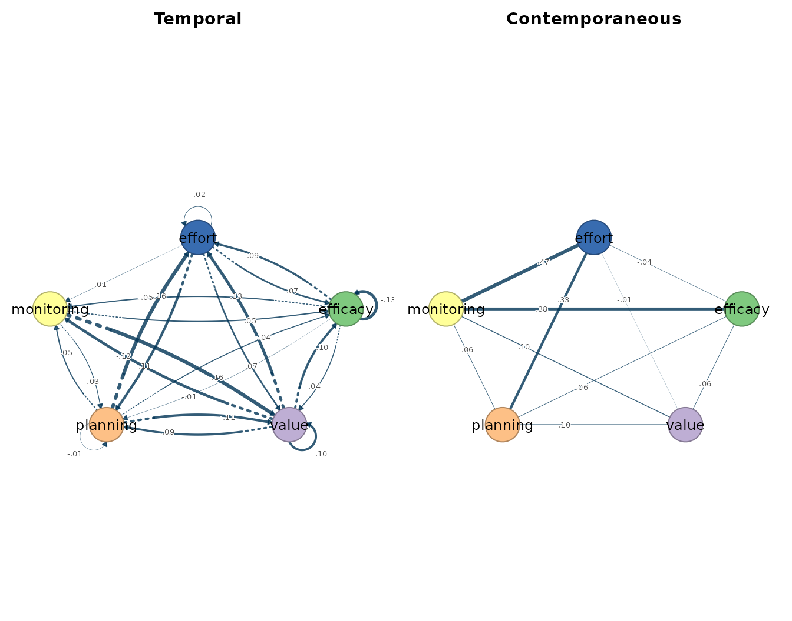
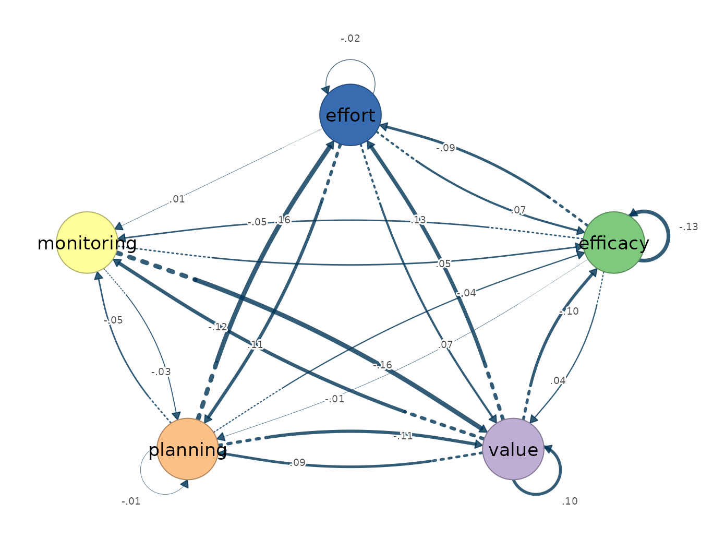
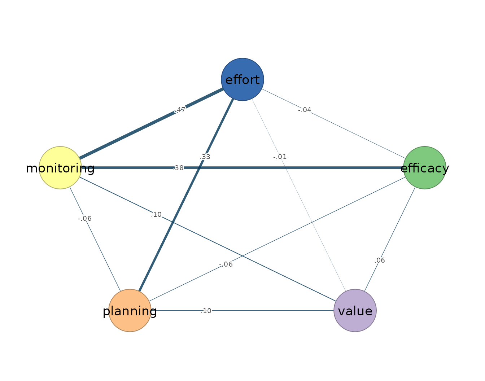
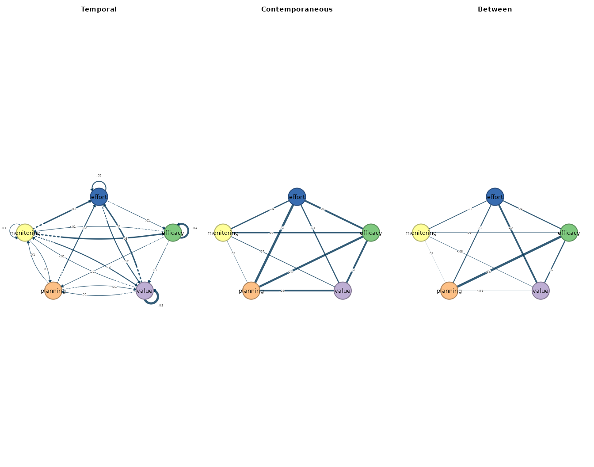
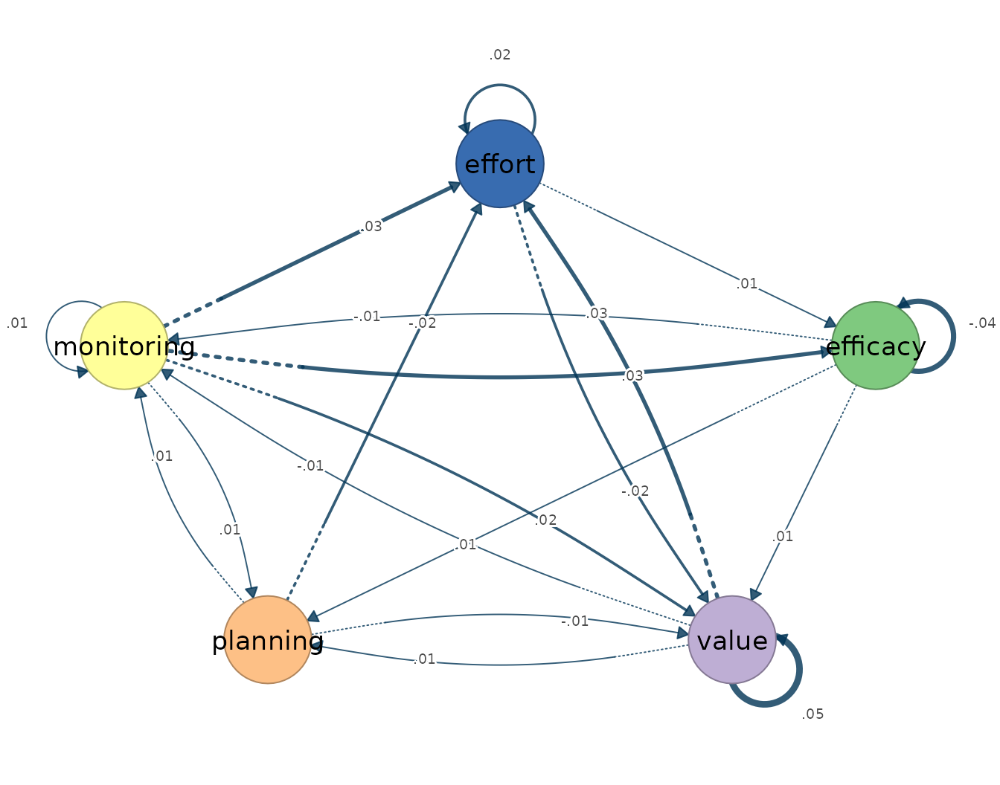
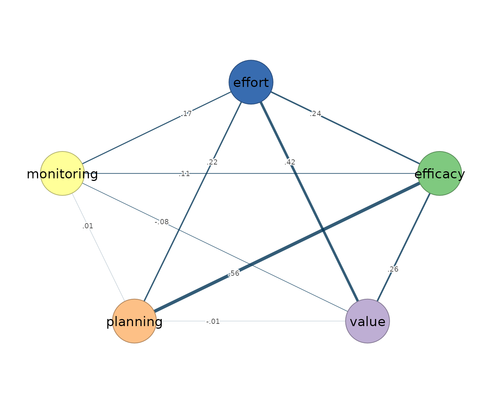

fit_var_bayes() estimates a single-person Bayesian
vector autoregression of order one: an idiographic model, fitted to one
individual’s multivariate series, in which each occasion’s measurements
are predicted jointly by the values of all variables one occasion
earlier and by the associations that remain among the variables within
the same occasion. The estimands are the same two within-person networks
the ordinary VAR of fit_var() returns. The temporal network
is directed: an edge from -> to states that the value of
from at occasion
predicts the value of to at occasion
,
holding the other lagged variables constant. The contemporaneous network
is undirected: its edges are the partial correlations among the
innovations, the within-occasion associations that lagged prediction
does not account for. The Bayesian estimator places priors on the lagged
coefficients and the innovation covariance and reports posterior
distributions over these same quantities, so each edge carries a
credible interval rather than a point estimate alone. The model presumes
weak stationarity — constant mean, variance, and autocovariance across
the observation window — linear lag-one dynamics, approximately Gaussian
fluctuations, and equally spaced measurement occasions.
fit_mlvar_bayes() and fit_mlvar_mplus()
estimate the multilevel analogue, the Bayesian multilevel VAR in its
dynamic structural equation modelling (DSEM) formulation. Where the
single-person model describes one individual, the multilevel model pools
a panel of individuals and separates the variance into layers: a
population-level average within-person temporal network, a
population-level average within-person contemporaneous network, and a
between-person network — a partial-correlation network over the subject
means, describing how people who are high on one variable on average
tend to differ on the others. The between layer is a structure of stable
individual differences, not a within-person process, and the two need
not coincide; treating between-person associations as if they described
anyone’s dynamics is the ergodicity error the idiographic literature
warns against. fit_mlvar_mplus() targets the Mplus DSEM
backend for laboratories with a licensed Mplus installation that require
its syntax and diagnostics; fit_mlvar_bayes() estimates a
native model whose explicitly documented slices are validated against
frozen Mplus outputs without requiring the external dependency.
Bayesian estimation is appropriate when posterior intervals, prior
regularization, or DSEM-style modelling is central to the analysis; when
the goal is a fast point-estimate comparison, fit_var() and
fit_mlvar() provide that baseline. The native Bayesian
chunks below are evaluated during the build, so every printed result
comes from the displayed call. Only the external Mplus call remains
unevaluated because it requires licensed software.
Data and preprocessing
The estimators expect long format: one row per person-occasion, an id
column, and numeric time-varying indicators ordered within person. The
bundled srl data hold self-regulated-learning indicators
for 36 students measured over 156 occasions each. The single-person
calls fit one student, Grace, on five indicators; the multilevel calls
use the full panel of 36 students on the same variables. Because the
estimators absorb assumption violations silently — a trend, for
instance, inflates the autoregressive diagonal rather than producing an
error — the stationarity screen precedes the fit.
vars <- c("efficacy", "value", "planning", "monitoring", "effort")
preprocess(srl, vars = vars, id = "name", subject = "Grace")
#> Idiographic Preprocessing
#> Variables: 5 (efficacy, value, planning, monitoring, effort)
#> Ordered rows: 156
#> Retained pairs: 155
#> Trend flags: 0
#> High AR flags: 0
#> Drift flags: 0
#> Unit-root risk: 0
#> Zero variance: 0
#> Tables: x$pairs | x$counts | x$diagnosticsGrace’s 156 ordered occasions yield 155 complete current/lagged pairs, and no series trips a trend, high-autoregression, drift, unit-root, or zero-variance flag, so the models are specified on the series as they stand.
Fitting the model
The single-person call takes the data, the variable set, the id
column, and the subject; n_iter sets the chain length,
n_chains the number of chains, and seed fixes
the random state for reproducibility.
var_bayes_fit <- fit_var_bayes(
srl, vars = vars, id = "name", subject = "Grace",
n_iter = 4000, n_chains = 2, seed = 1
)
var_bayes_fit
#> Bayesian VAR(1) result (unregularized, Mplus-targeted)
#> Variables: 5 (efficacy, value, planning, monitoring, effort)
#> Observations: 155
#> MCMC: 2 chains x 4000 iter, 4000 draws | max PSR = 1.002
#> Temporal 95% CIs excluding 0: 0 / 25
#>
#> Temporal [directed]
#> weights [-0.158, 0.159] | +12 / -13 edges
#> efficacy value planning monitoring effort
#> efficacy -0.13 0.04 -0.01 -0.05 -0.09
#> value -0.10 0.10 0.09 -0.12 0.13
#> planning -0.04 -0.11 -0.01 -0.05 0.16
#> monitoring 0.05 -0.16 -0.03 0.00 0.00
#> effort 0.07 0.07 0.11 0.01 -0.02
#>
#> Contemporaneous [undirected]
#> weights [-0.058, 0.467] | +6 / -4 edges
#> efficacy value planning monitoring effort
#> efficacy 0.00 0.06 -0.06 0.38 -0.04
#> value 0.06 0.00 0.10 0.10 -0.01
#> planning -0.06 0.10 0.00 -0.06 0.33
#> monitoring 0.38 0.10 -0.06 0.00 0.47
#> effort -0.04 -0.01 0.33 0.47 0.00
#>
#> coefs(x) | matrices(x) | edges(x) | nodes(x) | summary(x)The evaluated fit uses two chains, retains 4,000 posterior draws after burn-in, and reports a maximum potential scale reduction statistic close to 1. No temporal 95% credible interval excludes zero in this run.
The multilevel Bayesian call uses the same panel structure as
fit_mlvar(). Setting temporal = "fixed"
estimates the average lag-one matrix without subject-specific random
deviations; n_iter, n_chains, and
seed control the MCMC as before.
mlvar_bayes_fit <- fit_mlvar_bayes(
srl, vars = vars, id = "name", temporal = "fixed",
n_iter = 4000, n_chains = 2, seed = 1
)
mlvar_bayes_fit
#> Bayesian mlVAR (Mplus DSEM-targeted, temporal = fixed): 36 subjects, 5548 observations, 5 variables
#> MCMC: 2 chains x 4000 iter (2000 burn-in), 4000 draws | max PSR = 1.000
#> Temporal 95% CIs excluding 0: 2 / 25
#>
#> Temporal [directed]
#> weights [-0.042, 0.051] | +18 / -7 edges
#> efficacy value planning monitoring effort
#> efficacy -0.04 0.01 0.01 -0.01 0.00
#> value 0.00 0.05 0.01 -0.01 0.03
#> planning 0.00 -0.01 0.00 0.01 -0.02
#> monitoring 0.03 0.02 0.01 0.01 0.03
#> effort 0.01 -0.02 0.00 0.00 0.02
#>
#> Contemporaneous [undirected]
#> weights [0.026, 0.274] | +10 / -0 edges
#> efficacy value planning monitoring effort
#> efficacy 0.00 0.21 0.24 0.16 0.21
#> value 0.21 0.00 0.19 0.07 0.13
#> planning 0.24 0.19 0.00 0.03 0.27
#> monitoring 0.16 0.07 0.03 0.00 0.14
#> effort 0.21 0.13 0.27 0.14 0.00
#>
#> Between [undirected]
#> weights [-0.075, 0.558] | +8 / -2 edges
#> efficacy value planning monitoring effort
#> efficacy 0.00 0.26 0.56 0.11 0.24
#> value 0.26 0.00 -0.01 -0.08 0.42
#> planning 0.56 -0.01 0.00 0.01 0.22
#> monitoring 0.11 -0.08 0.01 0.00 0.17
#> effort 0.24 0.42 0.22 0.17 0.00
#>
#> coefs(x) posterior median/SD/CI | matrices(x) | edges(x) | summary(x)The evaluated multilevel fit also retains 4,000 posterior draws and has a maximum potential scale reduction statistic close to 1. Two of the 25 temporal 95% credible intervals exclude zero.
The Mplus backend call is shown but not evaluated, because it
requires the suggested mlVAR and
MplusAutomation packages plus a licensed Mplus installation
discoverable by MplusAutomation::detectMplus().
mplus_fit <- fit_mlvar_mplus(
srl, vars = vars, id = "name",
temporal = "fixed", contemporaneous = "fixed"
)Reading the output
The single-person posterior medians reproduce the ordinary VAR
pattern. Monitoring at occasion
predicts lower value at occasion
(posterior median −0.158), planning predicts higher effort (0.159), and
the largest contemporaneous edge is monitoring–effort (0.467). None of
the temporal credible intervals excludes zero, so these medians are
descriptive rather than evidence of selected temporal paths. The same
accessors that serve the point-estimate fits apply:
summary() reports one row per network layer,
edges() lists edges in decreasing magnitude,
nodes() gives node-level strength, and
matrices() returns the underlying posterior-median
matrices.
summary(var_bayes_fit)
#> network n_nodes n_edges density mean_abs_weight n_positive n_negative
#> 1 temporal 5 20 1 0.07342064 10 10
#> 2 contemporaneous 5 10 1 0.16003715 6 4
edges(var_bayes_fit, n = 12)
#> network from to weight
#> 1 temporal planning effort 0.15855702
#> 2 temporal monitoring value -0.15752088
#> 3 temporal value effort 0.13341509
#> 4 temporal value monitoring -0.11957255
#> 5 temporal planning value -0.10703952
#> 6 temporal effort planning 0.10585644
#> 7 temporal value efficacy -0.10050352
#> 8 temporal efficacy effort -0.08773320
#> 9 temporal value planning 0.08768917
#> 10 temporal effort value 0.06738818
#> 11 temporal effort efficacy 0.06590692
#> 12 temporal planning monitoring -0.05476234
nodes(var_bayes_fit)
#> network node strength out_strength in_strength self
#> 1 temporal efficacy 0.4399302 0.1835059 0.2564242 -0.130868483
#> 2 temporal value 0.8146126 0.4411803 0.3734323 0.103757343
#> 3 temporal planning 0.5893630 0.3576854 0.2316776 -0.006208376
#> 4 temporal monitoring 0.4665718 0.2401494 0.2264224 0.001209551
#> 5 temporal effort 0.6263479 0.2458916 0.3804562 -0.024440733
#> 6 contemporaneous efficacy 0.5301826 NA NA 0.000000000
#> 7 contemporaneous value 0.2733152 NA NA 0.000000000
#> 8 contemporaneous planning 0.5516642 NA NA 0.000000000
#> 9 contemporaneous monitoring 1.0015677 NA NA 0.000000000
#> 10 contemporaneous effort 0.8440133 NA NA 0.000000000
matrices(var_bayes_fit)
#>
#> $temporal
#> efficacy value planning monitoring effort
#> efficacy -0.131 0.041 -0.009 -0.045 -0.088
#> value -0.101 0.104 0.088 -0.120 0.133
#> planning -0.037 -0.107 -0.006 -0.055 0.159
#> monitoring 0.053 -0.158 -0.029 0.001 0.001
#> effort 0.066 0.067 0.106 0.007 -0.024
#>
#> $contemporaneous
#> efficacy value planning monitoring effort
#> efficacy 0.000 0.059 -0.058 0.377 -0.036
#> value 0.059 0.000 0.104 0.100 -0.010
#> planning -0.058 0.104 0.000 -0.058 0.331
#> monitoring 0.377 0.100 -0.058 0.000 0.467
#> effort -0.036 -0.010 0.331 0.467 0.000The Bayesian mlVAR fit gives a temporal mean absolute weight of 0.012, a contemporaneous mean absolute weight of 0.165, and a between-person mean absolute weight of 0.206 in this panel. Monitoring at occasion to effort at occasion is the largest average temporal edge (posterior median 0.032). Planning–effort is the largest contemporaneous edge (0.274), and efficacy–planning is the largest between-person edge (0.558) — a statement about which students report high efficacy and high planning on average, not about either process unfolding within any student.
summary(mlvar_bayes_fit)
#> network n_nodes n_edges density mean_abs_weight n_positive n_negative
#> 1 temporal 5 20 1 0.0123179 14 6
#> 2 contemporaneous 5 10 1 0.1647556 10 0
#> 3 between 5 10 1 0.2062346 8 2
edges(mlvar_bayes_fit, n = 12)
#> network from to weight
#> 1 temporal monitoring effort 0.03219318
#> 2 temporal value effort 0.02835559
#> 3 temporal monitoring efficacy 0.02741661
#> 4 temporal effort value -0.02154632
#> 5 temporal monitoring value 0.01628370
#> 6 temporal planning effort -0.01609616
#> 7 temporal planning monitoring 0.01456523
#> 8 temporal efficacy planning 0.01361466
#> 9 temporal value planning 0.01232276
#> 10 temporal monitoring planning 0.01125437
#> 11 temporal efficacy value 0.01100432
#> 12 temporal value monitoring -0.00808864
nodes(mlvar_bayes_fit)
#> network node strength out_strength in_strength self
#> 1 temporal efficacy 0.07111313 0.03328348 0.03782965 -0.042321793
#> 2 temporal value 0.10666673 0.05073933 0.05592740 0.051256016
#> 3 temporal planning 0.08095734 0.03933515 0.04162219 0.004545817
#> 4 temporal monitoring 0.12031678 0.08714786 0.03316892 0.012794045
#> 5 temporal effort 0.11366219 0.03585226 0.07780993 0.016079869
#> 6 contemporaneous efficacy 0.81333100 NA NA 0.000000000
#> 7 contemporaneous value 0.59864052 NA NA 0.000000000
#> 8 contemporaneous planning 0.73179508 NA NA 0.000000000
#> 9 contemporaneous monitoring 0.40012171 NA NA 0.000000000
#> 10 contemporaneous effort 0.75122467 NA NA 0.000000000
#> 11 between efficacy 1.16801787 NA NA 0.000000000
#> 12 between value 0.76459065 NA NA 0.000000000
#> 13 between planning 0.79032247 NA NA 0.000000000
#> 14 between monitoring 0.35865695 NA NA 0.000000000
#> 15 between effort 1.04310460 NA NA 0.000000000
matrices(mlvar_bayes_fit)
#>
#> $temporal
#> efficacy value planning monitoring effort
#> efficacy -0.042 0.002 0.002 0.027 0.007
#> value 0.011 0.051 -0.007 0.016 -0.022
#> planning 0.014 0.012 0.005 0.011 0.004
#> monitoring -0.007 -0.008 0.015 0.013 -0.003
#> effort 0.001 0.028 -0.016 0.032 0.016
#>
#> $contemporaneous
#> efficacy value planning monitoring effort
#> efficacy 0.000 0.206 0.240 0.158 0.209
#> value 0.206 0.000 0.192 0.074 0.126
#> planning 0.240 0.192 0.000 0.026 0.274
#> monitoring 0.158 0.074 0.026 0.000 0.142
#> effort 0.209 0.126 0.274 0.142 0.000
#>
#> $between
#> efficacy value planning monitoring effort
#> efficacy 0.000 0.264 0.558 0.105 0.240
#> value 0.264 0.000 -0.007 -0.075 0.417
#> planning 0.558 -0.007 0.000 0.008 0.216
#> monitoring 0.105 -0.075 0.008 0.000 0.170
#> effort 0.240 0.417 0.216 0.170 0.000The plot() method draws the layers with the same
conventions as the other estimators: arrows for lag-one prediction in
the temporal panel, undirected edges for the contemporaneous and between
layers, width scaled by absolute weight and colour encoding sign.
plot(var_bayes_fit)
plot(var_bayes_fit, layer = "temporal")
plot(var_bayes_fit, layer = "contemporaneous")
plot(mlvar_bayes_fit)
plot(mlvar_bayes_fit, layer = "temporal")
plot(mlvar_bayes_fit, layer = "contemporaneous")
plot(mlvar_bayes_fit, layer = "between")
The evaluated calls remove the gap between displayed code and
reported output, but they are still examples rather than a universal
MCMC prescription. Applied analyses require problem-specific chain
lengths, convergence diagnostics, posterior predictive checks, and
sensitivity analyses over the priors. fit_mlvar_mplus()
additionally depends on an external Mplus installation, so it is
demonstrated only as a call template.